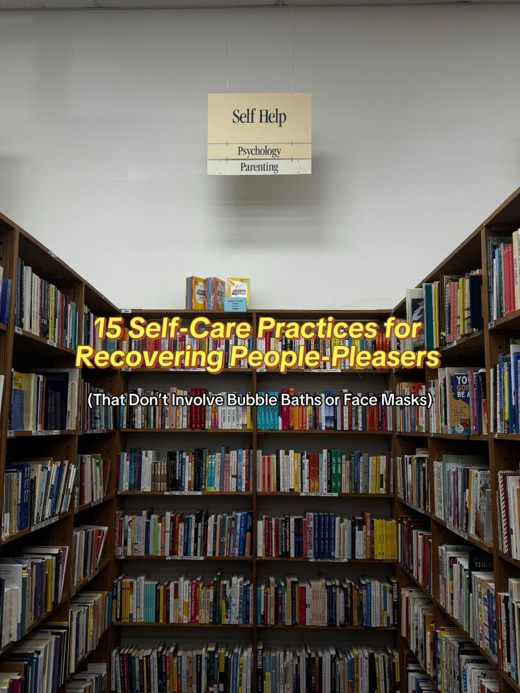
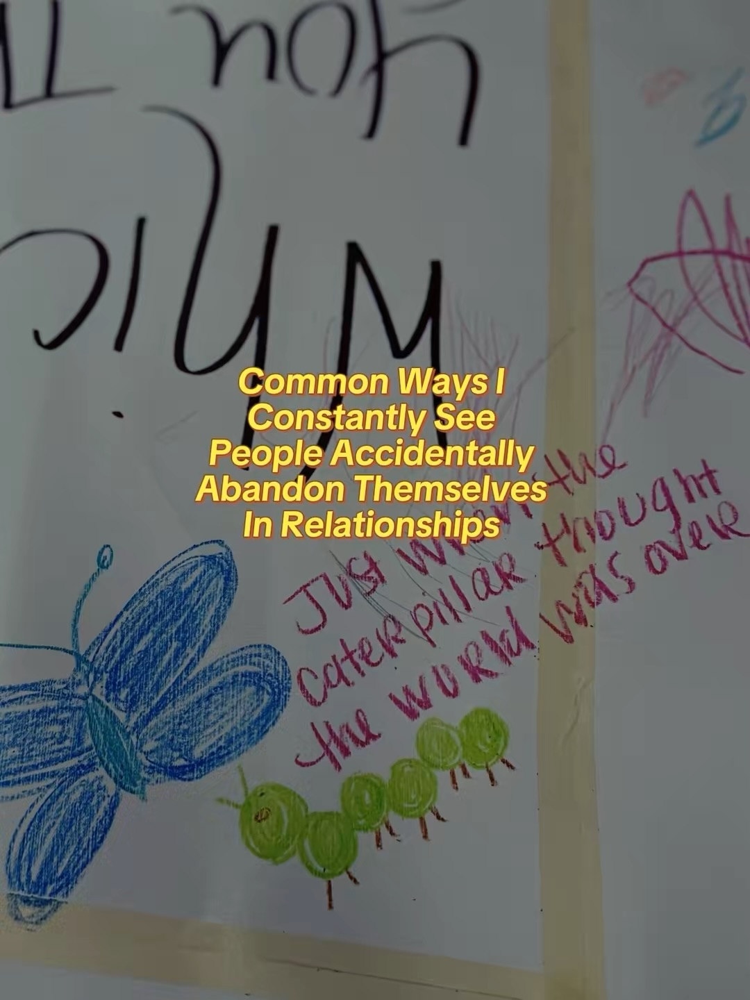

You're not lost.
You're in the in-between.
There's a phase before the butterfly — not caterpillar, not yet wings. That tender, uncertain middle is where transformation actually lives. Mariposa is here for that part of your journey.
Begin Your JourneyWelcome
A space where you're allowed to not have it all together
Opening up in therapy takes courage, and I deeply respect the trust it requires. My approach is relational, compassionate, and rooted in IFS and trauma-informed care. Together, we'll explore what's beneath the surface and build the self-trust needed to create lasting change.
Whether you're dealing with anxiety that won't quit, trauma you've been avoiding, or an exhaustion you can't name — this is a space where all of it is welcome.
Meet KaylaThe Mariposa Story
Before the butterfly,
there is the cocoon
Mariposa is Spanish for butterfly — but the name isn't about the transformation you can see. It's about the one you can't. That quiet, disorienting in-between: when the old version of you no longer fits, and the new one isn't fully formed yet.
If you're here, you might be in that space. Not broken — becoming. This practice was built for exactly that kind of courage.
What We Work Through
Therapy that meets you
where you are
Whether you're navigating trauma, perfectionism, anxiety, or the quiet weight of always being the strong one — you deserve a space where all of it is welcome.
Explore All Services →Trauma & PTSD
Healing from complex trauma, PTSD, and CPTSD using evidence-based modalities in a safe, paced environment.
Anxiety & Perfectionism
Understanding the parts of you that drive perfectionism, people-pleasing, and fawning — and giving them new roles.
Depression & Self-Worth
Rebuilding a sense of self, purpose, and worthiness when depression has made those things feel out of reach.
Women's Issues
Specializing in the unique experiences of women — identity, relationships, roles, and reclaiming yourself.
Life Transitions
Navigating the in-between moments — grief, identity shifts, relationship changes, and finding your footing.
Family & Relationships
Exploring family of origin patterns, codependency, and how your earliest attachments show up in your life today.
A Special Focus
For the mother who's
lost herself in the giving
You've spent years being everything to everyone. The caretaker. The one who holds it all together. Maybe you stepped into that role long before you became a mother — as the eldest daughter, the responsible one, the child who kept the family steady.
Now you're burning out, and the guilt of admitting that feels like one more thing to carry. This is a space built for you.
- Burnout and emotional exhaustion in motherhood
- Eldest / oldest daughter syndrome
- Loss of identity beyond caregiving roles
- Postpartum anxiety and depression
- Breaking generational patterns
- Reclaiming your sense of self
How We Work
Rooted in
evidence,
guided by
compassion
Every modality is chosen with intention — and adapted to meet you where you are, not where a textbook says you should be.
Full Approach →- 01
Internal Family Systems (IFS)
The core of my work. IFS helps us get curious about the different "parts" of you — the protectors, the inner critic, the exhausted caregiver — with compassion instead of judgment. When parts feel understood, they stop working against you.
- 02
EMDR
Eye Movement Desensitization and Reprocessing helps the brain process traumatic memories that feel "stuck" — reducing their emotional charge so they can be integrated rather than avoided.
- 03
Somatic Therapy
Trauma lives in the body. Somatic approaches help you notice and work with physical sensations, bringing the nervous system into the healing process alongside the mind.
- 04
DBT & Coping Skills
Practical tools for managing overwhelming emotions, improving relationships, and building distress tolerance.
- 05
Attachment-Based & Relational
Exploring how your earliest relationships shaped your nervous system and your sense of worthiness — and building something more secure from here.
LPC-24196 · 6 Years in Practice
Meet Your Therapist
Hi, I'm Kayla
I became a therapist because I believe every person carries wisdom they haven't fully met yet. My job isn't to fix you — it's to help you find your own way back to yourself.
"I primarily use IFS because I've found that most symptoms can be addressed by getting to know the part of you that's showing up — then giving that part new skills to help you cope with challenging emotions and situations."
I specialize in working with women navigating anxiety, perfectionism, trauma, and the kind of exhaustion that comes from spending too long taking care of everyone else. Whether we're processing the past, strengthening coping skills, or rebuilding self-trust — my goal is to create a space where you feel understood and empowered.
More About Kayla →Getting Started
What to expect
Free Consultation
A 15-minute call to see if we're a good fit. No pressure, no commitment — just a conversation.
First Session
We get to know each other. You share what brought you here; I share how we might work together.
Ongoing Work
Weekly or bi-weekly sessions tailored to your needs — in-person or virtual, evenings available.
Real Change
Not overnight, but real. You'll start to notice shifts — inside and in how you move through the world.
Join the Community
A therapist who actually
talks about it
Kayla shares real, unfiltered content about anxiety, trauma, IFS, perfectionism, and the messy middle of healing — because mental health education shouldn't feel clinical.
Hey, I’m so glad you found me here — I’m Kayla
Thoughts I’ve had as a therapist returning from maternity leave

Common ways people accidentally abandon themselves in relationships

15 self-care practices for recovering people-pleasers
Individual Session
50-minute sessions, in-person or virtual throughout Arizona. Flexible weekday and evening availability.
15-Min Consultation
No cost, no pressure. Just a conversation to see if we're the right fit before you commit to anything.
Superbill Available
Currently self-pay. A superbill can be provided for out-of-network reimbursement requests.
Get In Touch
Ready to take
the first step?
Reaching out is the hardest part. I'll get back to you within one business day.
Phone
(480) 605-0846In-Person
1845 S Dobson Rd, Suite 101
Mesa, AZ 85202
Virtual
Available throughout Arizona
via secure telehealth